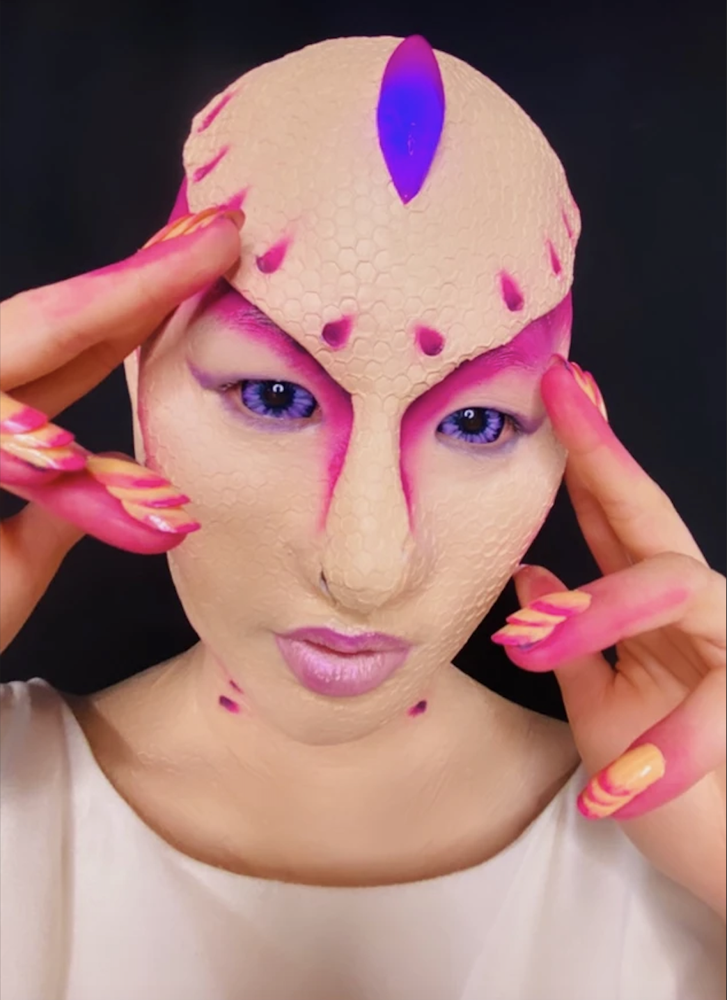

Get to know me, Alejandra Lopez Godreau!
Origin
I was born Puerto Rico, I grew up by the ocean water, building sand castles and truly being what they call an island baby. At nine years old my family moved to the Dominican Republic, where, for the first time, I had to learn how to adapt to a new environment. I spent 4 wonderful years there and discovered my passion for acting, theater, and dancing. We then moved to Miami, where I was able to further develop my artistic skills and jump into the world of entertainment.
Academic Background
I began my academic journey at the University of Florida, where I got my Bachelor's Degree for Public Relations. During that time I also explored my artistic passions by going to professional makeup school and getting my masters for Special Effects makeup. Learning about PR principles and making aliens at the same time was a busy but rewarding and exciting experience. Although I had a busy schedule, my love for learning didn't stop. I began my combination degree program, beginning my Master's Degree for Digital Strategies. I'm currently on my second-to-last semester for my Master's.

Professional Background
- Actress
- I started theater when I was 10 years old in the Dominican Republic. Once in Miami my acting career took off, and I've been part of some awsome telenovelas such as Mariposa de Barrio and Familia Perfecta from Telemundo. In the American entertainment world, I've had the privilidge to work on some soon-to-be-released pilots and ABC's Modern Family.
- Influencer
- In 2020, I began making fun of my Hispanic family on TikTok, since then my audience grew and I've had the honor to be a representative of the Latinx community on TikTok and working on some great partnerships with T-Mobile, Dunkin Donuts, and Hyundai, to name a few.
- Communicator
- My career in communications is just blooming, this past June I was invited to be part of one of Univision's leading radio networks as a Radio Host, interviewing celebrities, spiritual and financial counselors, and many more. I've also been invited to speak at the Youth Marketing Conference in New York about diversity in today's market place, and how to approach it from an authentic and honest place.
More information
For more information about me please click here